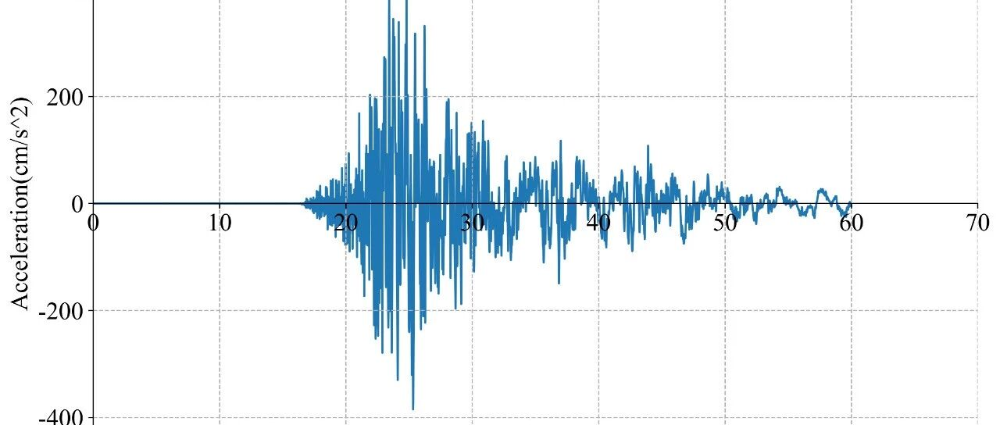

RED-ACT: 7月6日美国加州7.1级地震破坏力分析
致谢和声明：
感谢CESMD和SCSN为本研究提供数据支持。本分析仅供科研使用，具体灾情和灾损分析应根据现场调查情况确定。
由于美方部分处理后的地震动没有公布，所以我们组直接根据美方台站原始记录处理得到了地震动，尚未经过地震动方面专家校核。
一、地震情况简介
据美国地质调查局(USGS)正式测定，当地时间7月5日19时20分（北京时间7月6日11时20分）在美国加利福尼亚州发生7.1级地震，震源深度17千米，震中位于北纬35.75度，西经117.58度。
二、强震记录及分析
0705美国加州7.1级地震获得了9组地震动，由于地震动没有完全收集，可能还有更强的记录。典型地震记录分析如下：
CICCC记录台站位置北纬35.525度，西经117.365度，震中距约23km，记录到地震动峰值加速度为569cm/s/s。该地震动如图1所示。
CITOW2记录台站位置北纬35.809度，西经117.765度，震中距约7.8km，记录到地震动峰值加速度为429cm/s/s。该地震动如图2所示。


图2 CITOW2台站记录和反应谱
三、地震动对典型城市区域破坏能力分析
利用密布强震台网在震后获取的实时地震动信息，再结合城市抗震弹塑性分析，就可以得到地震发生后不同地点的建筑破坏情况，为抗震救灾决策提供科学支撑。图3为根据20190705美国加州7.1级地震震中附近范围内台站记录分析得到的建筑震害分布示意图，图4为根据震中附近范围内台站记录分析得到的人员加速度感受分布示意图。


相关文章

---End---
相关研究
长按识别二维码，关注我们的科研动态